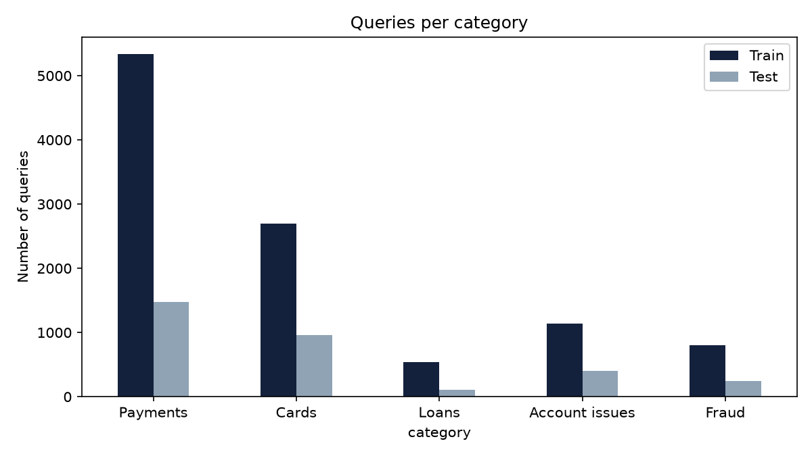
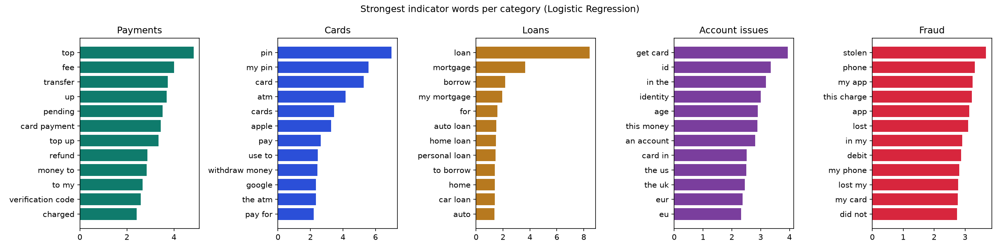
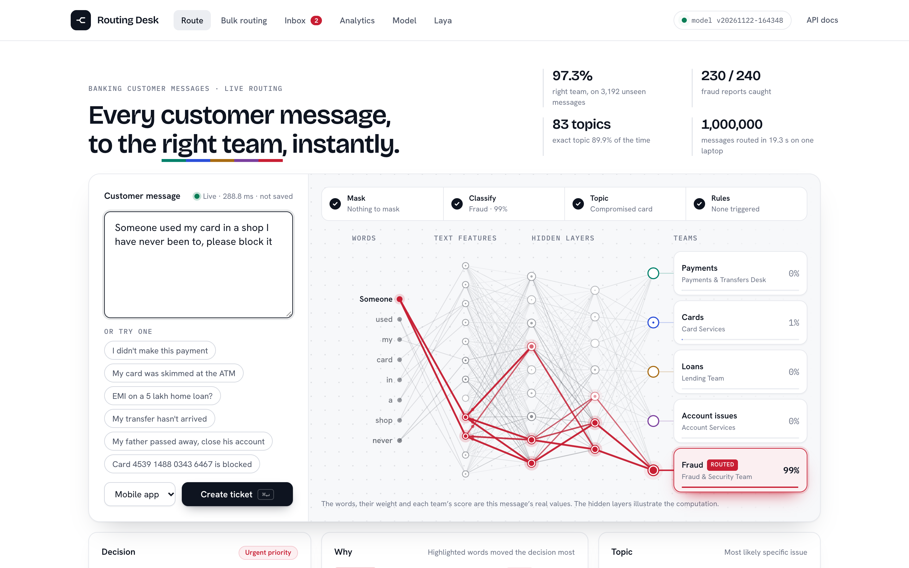
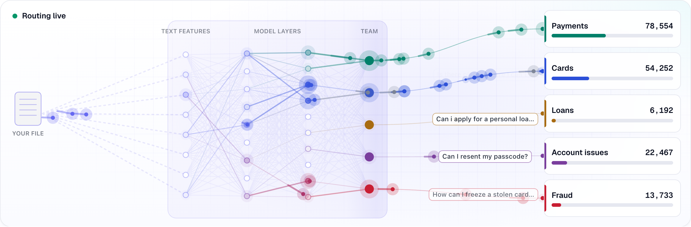
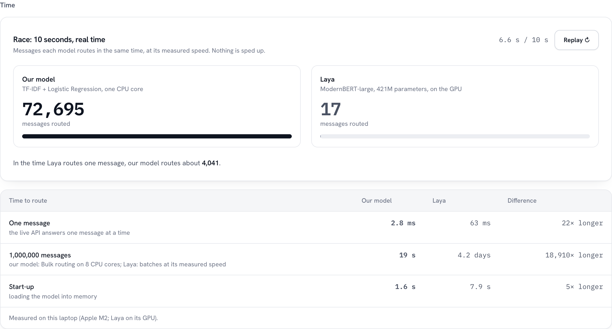
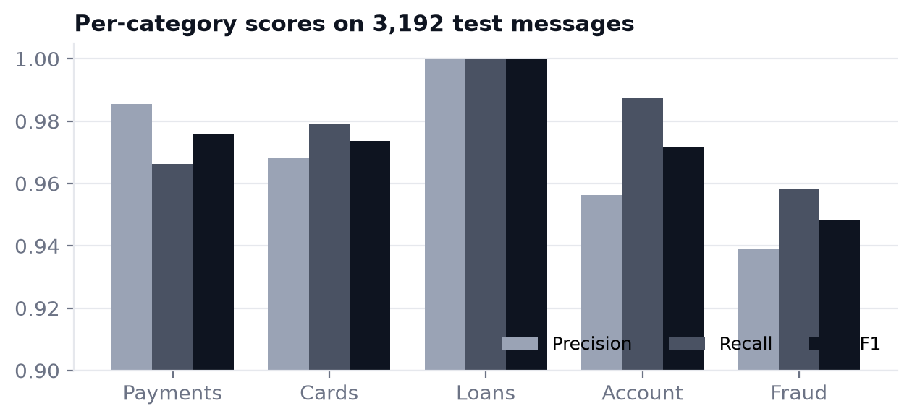
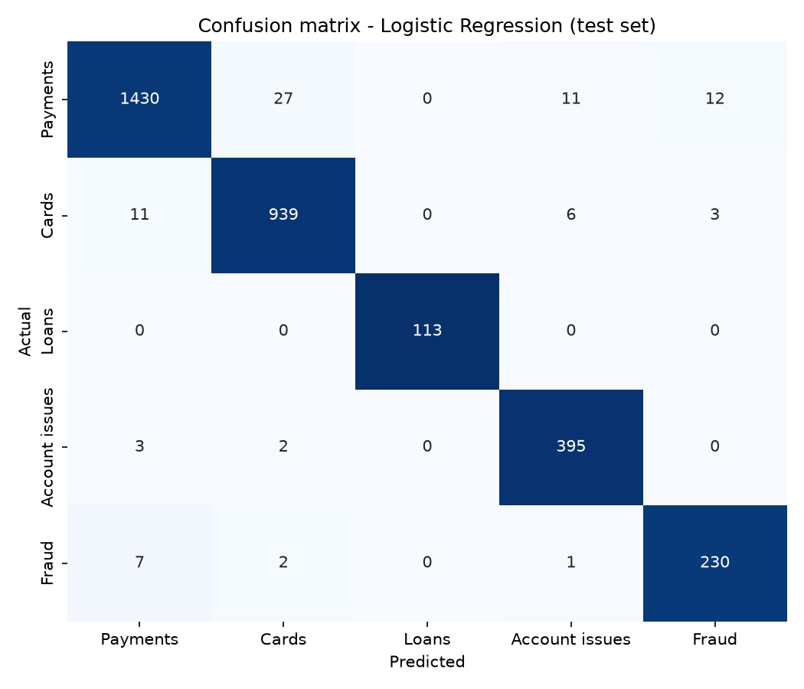
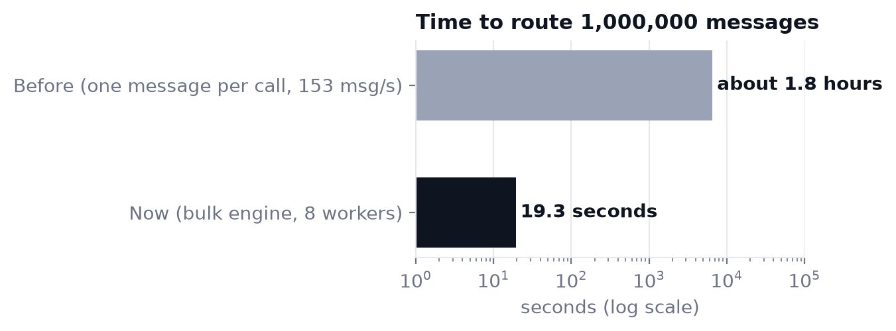

Abstract—Banks receive large volumes of free-text customer messages that must reach the right team quickly. We present Routing Desk, a natural language processing system that masks personal data, classifies each message into one of five categories (payments, cards, loans, account issues and fraud), predicts one of 83 sub-intent topics, and routes the message to a team with a priority and a service-level deadline. The production model uses TF-IDF word and character n-gram features with a Logistic Regression classifier (C = 20), selected by 5-fold stratified cross-validation over four candidates. On a fixed test set of 3,192 messages it reaches 97.34% accuracy and a macro F1 of 0.9739, and it catches 230 of 240 fraud messages. We then scale the system from a hard limit of 1,000 messages per request to files of 1,000,000 messages and more. A bulk engine streams the file in chunks of 20,000 rows, computes text features once for both model heads, applies the routing rules as vectorised array operations and spreads the chunks over parallel worker processes. On an Apple M2 laptop it routes 51,799 messages per second with 8 workers and one million messages in 19.3 seconds, against about 1.8 hours before. Finally, we integrate Laya, an open-weights decision model, as a switched-off challenger and compare it on time only: 63 ms against 2.8 ms per message. We explain why the linear model stays in production and where decision models still add value.
Index Terms—text classification, intent detection, TF-IDF, logistic regression, customer support routing, batch inference, scalability, decision models.
I. Introduction
Every bank runs a front door for written customer contact: in-app chat, web forms and email. Each message has to be read, understood and passed to the team that can resolve it. A message about a stolen card belongs with the fraud team within the hour; a question about a mortgage can wait for the lending team. When this triage is done by hand, it is slow, inconsistent and expensive, and the most urgent messages wait in the same queue as everything else.
Routing Desk automates this triage. It reads a customer message, masks personal data such as card numbers and phone numbers, classifies the message into one of five categories (payments, cards, loans, account issues and fraud), predicts a more specific topic among 83 sub-intents, and applies a small set of business rules that set a priority and a service-level agreement (SLA) deadline. Messages the model is unsure about are sent to a manual review queue instead of being guessed.
The first phase of the project produced an accurate classifier and a working application, but it was built for one message at a time. Its batch endpoints refused more than 1,000 messages per request, and routing one million messages through the single-message endpoint would have taken about 1.8 hours. This paper describes how the system was rebuilt to route one million messages in 19.3 seconds on a laptop without changing a single routing decision, and how an open-weights decision model, Laya [9], was integrated and measured as a challenger.
The contributions are:
- an end-to-end routing system with personal-data masking, a TF-IDF and Logistic Regression model chosen by cross-validation, a two-tier fraud safety net and an automatic release check before a model reaches production;
- a bulk engine that streams files of any size, scores each chunk in one forward pass, applies rules as array operations and runs on all CPU cores, proven to make exactly the same decisions as the per-message router;
- an integration of the Laya decision model as a switched-off challenger, with a time-only comparison and an analysis of where decision models fit;
- a Next.js user interface that shows each decision and the live flow of a bulk file into the five team queues.
Section II reviews related work and Section III the data. Section IV describes the model and the routing rules, Section V the system, Section VI the bulk engine and Section VII the Laya challenger. Section VIII reports results, Section IX discusses limitations and Section X concludes.
II. Related Work
Intent detection in banking. Casanueva et al. [1] released Banking77, a public dataset of short, single-turn customer queries in the banking domain labelled with fine-grained intents, and showed that intent detectors built on dual sentence encoders are efficient and accurate. Banking77 is the main source of our training data; we group its intents into the five operational categories used by the teams.
Linear text classification. Term weighting with term frequency and inverse document frequency (TF-IDF) is a long-standing representation for text retrieval and classification [2], [11]. Joachims [5] showed that support vector machines handle the many sparse, relevant features of text well, and Rennie et al. [6] corrected the poor assumptions of naive Bayes, giving the Complement Naive Bayes classifier. Logistic Regression and linear SVMs on sparse features are solved efficiently by LIBLINEAR [4]; we use the scikit-learn [3] implementations of all candidates.
Pre-trained encoders and decision models. BERT [7] made fine-tuned bidirectional transformer encoders the default for many classification tasks, and ModernBERT [8] updates the design for faster, memory-efficient inference over longer contexts. Laya [9] builds on such an encoder: it is a non-autoregressive decision model that answers typed questions with calibrated probabilities over options instead of generating text. We use it as a challenger in Section VII.
Serving. The application programming interface (API) is built with FastAPI [10]. Our focus is not a new classifier but the engineering needed to make a classical, explainable model route very large volumes reliably.
III. Dataset
The training data combines three sources (Table II). The Banking77 dataset [1] supplies 9,974 training rows. Banking77 has no loan intents, so 544 loan queries were generated to cover the lending team. One further row comes from an agent correction made in the inbox, which the feedback loop adds to the training data. In total there are 10,519 training rows. The test set has 3,192 rows; it is fixed and never trained on, so every reported score is on unseen messages.
| Category | Team | Priority | SLA |
|---|---|---|---|
| Payments | Payments & Transfers Desk | high | 8 h |
| Cards | Card Services | normal | 24 h |
| Loans | Lending Team | normal | 48 h |
| Account issues | Account Services | normal | 24 h |
| Fraud | Fraud & Security Team | urgent | 1 h |
Each message carries one of five categories, mapped to a team, a default priority and an SLA in hours (Table I). Messages with low model confidence go to a sixth destination, “General Support (manual review)”. Under the five categories sit 83 sub-intents, or topics, such as a compromised card or a pending transfer, which tell the agent what the customer actually needs.
| Category | Train | Test |
|---|---|---|
| Payments | 5,338 | 1,480 |
| Cards | 2,701 | 959 |
| Loans | 544 | 113 |
| Account issues | 1,137 | 400 |
| Fraud | 799 | 240 |
| Total | 10,519 | 3,192 |
| Training sources: Banking77 9,974; generated loans 544; agent feedback 1. | ||

The classes are imbalanced (Fig. 1): payments have 5,338 training rows and loans 544. Accuracy alone would reward a model that favours the large classes, so model selection uses macro F1, the unweighted mean of the per-category F1 scores. A majority-class baseline that always answers “payments” scores 0.4637 accuracy but only 0.1267 macro F1 on the test set (Table V), which shows why.
IV. Method
A. Personal-Data Masking
Masking runs before anything else, so the model, the database and the logs only ever see masked text. Regular expressions find email addresses, IBANs, sort codes, account numbers and phone numbers. Long digit runs are tested with the Luhn checksum: a run that passes is a card number and becomes [CARD]; otherwise it is classified as a phone or account number. The placeholders stay in the text so that agents can see that something was there, and they act as useful features for the classifier.
B. Text Features
Each masked message is turned into a sparse TF-IDF vector [2], [11] that joins word n-grams and character n-grams. Word n-grams capture phrases such as “top up” or “my pin”; character n-grams make the representation robust to spelling mistakes, inflections and unseen word forms, which are common in customer messages.
C. Model Selection
Four candidates were compared: a majority-class baseline, Complement Naive Bayes [6], a linear SVM [5] and Logistic Regression. Each was tuned by a grid search under 5-fold stratified cross-validation on the training set, scored by macro F1. The winner was chosen on the cross-validation score, not on the test score, because choosing by test score leaks the test set into model selection and overstates real performance. Logistic Regression with C = 20 had the highest cross-validation macro F1, 0.9663, just ahead of the linear SVM at 0.9655 (Table V, Fig. 9).
D. Logistic Regression
Logistic Regression has two properties that matter for routing beyond its accuracy. First, it outputs a probability for every category; the review threshold, the fraud rule and the secondary category all act on these probabilities. Second, it is explainable: each category has a weight per feature, so the strongest indicator words can be listed (e.g. “stolen” and “this charge” for fraud, “loan” and “mortgage” for loans; Fig. 2), and the interface highlights the words that moved a decision most. The model trains in 36 s, is stored in a 27.6 MB file and loads in 1.6 s.

E. Topic Head with Shared Features
A second Logistic Regression head predicts the 83 topics. In the first phase it had its own feature pipeline, so every message was converted to features twice. The two heads now share one feature step and are saved together in one model.joblib: a message is converted once and both heads score the same feature matrix. Category decisions are unchanged (97.34% accuracy, same data fingerprint 2025a09cd7997a7e); topic accuracy moved from 89.97% to 89.94%, about one message of 3,192. The topic shown to agents is restricted to the predicted category so that the two never contradict each other.
F. Routing Rules
The model optimises average accuracy, but the bank cares disproportionately about fraud. A set of rules, kept in a configuration file that can be edited without retraining, sits on top of the model:
- Fraud safety net. Strong fraud phrases such as “skimmed” or “wasn’t me” always escalate to Fraud. Weaker words such as “suspicious” escalate only if the model also gives fraud some probability, so a loan question that mentions fraud still reaches Loans.
- Low confidence. Below the review threshold, the message goes to manual review instead of a team.
- Priority and SLA. Keyword overrides can raise the priority; SLA hours come from the team and are tightened for urgent and high priority.
- Secondary category. If the second-best category clears a threshold, it is reported alongside the decision.
Every rule that fires is written to the ticket’s audit trail.
G. Release Check
A newly trained version reaches production only if it passes a quality gate (Table III): macro F1 of at least 0.93, fraud recall of at least 0.90, topic accuracy of at least 0.80, and no regression of more than 0.01 against the current production model. The production version, v20261122-164348, passed all four checks.
| Check | Required | Value | Result |
|---|---|---|---|
| Macro F1 | ≥ 0.93 | 0.9739 | passed |
| Fraud recall | ≥ 0.90 | 0.9583 | passed |
| Topic accuracy | ≥ 0.80 | 0.8994 | passed |
| No regression vs. production | ≥ 0.9639 | 0.9739 | passed |
V. System Architecture
Fig. 3 shows the whole system. It is a Python service built with FastAPI [10] and a separate Next.js front end.
API. The versioned REST API classifies one message (/api/v1/classify), a batch (/classify/batch), a CSV upload (/classify/csv) and, since this phase, large files as background jobs (/api/v1/jobs). It uses API keys, rate limiting, request identifiers and cross-origin resource sharing (CORS) for the front end.
Tickets. Each routed message can become a ticket stored with SQLAlchemy (SQLite by default), together with an event history and the rules that fired. Agents can filter, re-route, add notes and see the history; a re-route becomes a labelled correction for the next training run.
Registry. Every trained version is stored with a model card. A production pointer selects the active version; promotion requires the release check, and the running service can hot-reload a new version without downtime.
Monitoring and tests. The service exposes Prometheus metrics and structured logs. The code base has 58 automated tests, including one that proves the bulk router makes exactly the same decision as the per-message router.

User interface. The new interface is written in Next.js 16 (App Router, TypeScript) with Tailwind CSS v4 and Motion animations, in a clean white design. It has six pages. Route classifies a message live and animates the decision through a network view (Fig. 4). Bulk routing accepts a file of any size and shows real routed messages flowing into five team bins with live counters and speed (Fig. 6). Inbox is the ticket queue. Analytics summarises the traffic. Model is the model report: release check, model comparison, confusion matrix, per-category scores, versions and figures. Laya shows the challenger comparison on time only (Fig. 8).
VI. Scaling to One Million Messages
A. Limits of the Previous Phase
The first phase handled about 153 messages per second per process through /api/v1/classify, one message per call. At that rate one million messages take about 1.8 hours (1,000,000 / 153 ≈ 6,536 s). The batch and CSV endpoints refused more than 1,000 messages per request with HTTP 413 (setting max_batch_size = 1000), and the interface could only show batches up to 1,000. Four costs made each message slow: features were computed twice, by separate category and topic pipelines; rules were applied one message at a time in Python; a database ticket was created per message; and the whole request was held open until the end.
B. Bulk Engine Design
The bulk engine (bankq/bulk.py) and the jobs API replace the request-at-a-time path for large inputs (Fig. 5). The file is uploaded once and becomes a background job: the API answers HTTP 202 with a job identifier, the client polls progress, and the results are downloaded as CSV. The engine reads the file from disk with a chunked pandas reader in chunks of 20,000 rows, so a file is never fully in memory and its size is limited by disk, not RAM. Rows are counted with a real CSV parser, because quoted messages can contain line breaks. The upload returns at once, whatever the file size, and no connection is held open while the file is routed.
C. One Forward Pass per Chunk
Turning text into features is most of the work. With the shared feature step of Section IV-E, each chunk is transformed into one sparse feature matrix, and the category head and the topic head both score that same matrix. Features are therefore computed once instead of twice, and in one call per 20,000 messages instead of one call per message.
D. Vectorised Routing Rules
The rules of Section IV-F were rewritten as NumPy array operations over the whole chunk: the fraud escalation, the review threshold, the priority overrides, the SLA hours and the secondary category are all computed as masks and element-wise selections over arrays of probabilities and keyword hits. An automated test checks that this bulk router makes exactly the same decision as the per-message router, so the speed-up changes no routing outcome.
E. Parallel Workers
Chunks are spread over a ProcessPoolExecutor started with the spawn method, one process per CPU core. Each worker loads the model once and keeps it. A bounded queue keeps at most workers × 2 chunks in flight, so memory stays flat however large the file is. Workers format their own CSV output, so the parent only appends text. Output is written to a .part file that is atomically renamed when the job completes, so a reader never sees a half-written result, and a crashed worker fails the job cleanly instead of hanging it.

F. Live Sampling
Each finished chunk also returns six real routed sample rows. The Bulk routing page animates these rows as they flow from the file through a network view into the five team bins, while counters and the measured speed update (Fig. 6). The animation therefore shows actual decisions from the running job, not invented examples.
VII. Decision-Model Challenger: Laya
A. What Laya Is
Laya [9] is an open-weights “System 1” decision model by NandhaKishorM / Convai Innovations, released under the Apache 2.0 licence and installable with pip install laya. The classic English checkpoint is a ModernBERT-large encoder [8] with a decision head: 421M parameters and 808 MB. The caller gives it a state (here, the customer message) and one or more typed questions; it returns a probability for every option in a single forward pass. It never generates text.

B. Integration
Laya is an optional dependency of our package (the laya extra), so the production service never loads it. An adapter, bankq/ml/laya_challenger.py, wraps it behind the same interface as our models and asks one typed question, “Which banking team should handle this customer message?”, with our five categories and their taxonomy descriptions as the options. A comparison script (bankq/ml/laya_eval.py), an API endpoint (GET /api/v1/model/challengers) and the UI page /laya expose the comparison. Laya is switched off: it never routes a message. It was asked zero-shot, without any training on our data.
C. Time Comparison
We compare Laya with our model on time only. Both were measured on the same Apple M2 laptop, with Laya on the M2 GPU through Metal Performance Shaders (MPS). Table IV and Fig. 7 summarise the results.
| Measure | Our model | Laya |
|---|---|---|
| One message | 2.8 ms | 63 ms |
| Batched throughput | 11,073 msg/sa | 2.74 msg/s |
| 1,000,000 messages | 19.3 sb | ≈ 4.2 days |
| Start-up (load) | 1.6 s | 7.9 s |
| Size | 27.6 MB | 808 MB |
| a1 CPU core, model scoring. bBulk engine, 8 workers. Laya on the M2 GPU (MPS); 1M time at 2.74 msg/s. | ||
One message takes 63 ms with Laya against 2.8 ms with our model, 22× longer. Batched, Laya processes 2.74 messages per second against 11,073 for our model on one CPU core, so in the time Laya routes one message our model routes about 4,000 (11,073 / 2.74 ≈ 4,041). One million messages would take Laya about 4.2 days, against 19.3 s for the bulk engine. Laya also needs 7.9 s to start against 1.6 s, and its checkpoint is 808 MB against 27.6 MB. The Laya page of the interface replays this gap as a ten-second race at the measured speeds (Fig. 8).

D. Why Laya Was Not Adopted
Three reasons kept Laya out of the routing path. Time: it is thousands of times slower in batch; one million messages would take days instead of seconds, and it needs a GPU to be practical at all. Not trained on our data: asked zero-shot, it only had a one-line description of each team. Its own authors describe the base checkpoint as “a fast base to specialise, not a zero-shot decision engine”; a fair quality comparison needs fine-tuning first, which is planned as the transformer challenger of the next phase. Size and cost: 808 MB with a GPU recommended, against 27.6 MB that runs on any CPU.
E. Why Decision Models Still Matter
For a fixed set of five teams with plenty of labelled data, TF-IDF with Logistic Regression is the right tool: fast, small, accurate and explainable through its indicator words. That is why it stays in production. A decision model adds what a fixed classifier cannot do without retraining: new questions or new teams at request time, by adding an option; several decisions in one pass, such as team, urgency, “is the customer threatening to leave?” and “is a refund requested?”; calibrated probabilities with abstention and prediction sets, so it can say “not sure”; and more than 100 languages with its multilingual checkpoint. Our plan is to keep TF-IDF for the bulk of the traffic and to use a decision model only as a second opinion on the small share of low-confidence messages, or for new decision types, where its time cost is affordable.
VIII. Results
A. Model Selection
| Model | CV macro F1 | Test acc. | Test macro F1 |
|---|---|---|---|
| Majority baseline | 0.1347 | 0.4637 | 0.1267 |
| Complement NB (α 0.1) | 0.9396 | 0.9533 | 0.9485 |
| Linear SVM (C 1.0) | 0.9655 | 0.9671 | 0.9568 |
| Logistic Regression (C 20) | 0.9663 | 0.9734 | 0.9739 |
Table V and Fig. 9 compare the four candidates. All three learned models are far above the majority baseline. Logistic Regression wins on cross-validation by a small margin over the linear SVM, and the fixed test set confirms the choice: 0.9734 accuracy and 0.9739 macro F1, against 0.9671 and 0.9568 for the SVM. Complement Naive Bayes is clearly behind on both.

B. Category Classification
On the 3,192 test messages the production model reaches 97.34% accuracy, a macro F1 of 0.9739 and a weighted F1 of 0.9734; 85 messages are misclassified. Table VI and Fig. 10 give the scores per category. Loans are perfect on all three measures. Fraud has the lowest precision, 0.9388, but a recall of 0.9583: 230 of 240 fraud messages are caught. For a bank this is the right trade-off, since a false fraud alarm costs an analyst a few minutes while a missed fraud report costs the customer money.
| Category | Precision | Recall | F1 | Support |
|---|---|---|---|---|
| Payments | 0.9855 | 0.9662 | 0.9758 | 1,480 |
| Cards | 0.9680 | 0.9791 | 0.9736 | 959 |
| Loans | 1.0000 | 1.0000 | 1.0000 | 113 |
| Account issues | 0.9564 | 0.9875 | 0.9717 | 400 |
| Fraud | 0.9388 | 0.9583 | 0.9485 | 240 |


The confusion matrix (Fig. 11) shows where the 85 errors are. The largest share lies between payments and cards, the two largest classes, whose vocabularies overlap (a card payment is both). Loans are never confused with anything, and the few fraud messages that are missed are mostly read as payments, which is the case the fraud safety net of Section IV-F is designed to catch.
C. Topic Classification
The 83-class topic head reaches 89.94% accuracy, a macro F1 of 0.8694 and a top-3 accuracy of 96.65%. Agents are shown the top topics within the routed category; the correct topic is among the model’s three most likely topics for 96.65% of test messages.
D. Throughput and Time
| Setting | msg/s | 1M messages |
|---|---|---|
| Before: one message per call | 153 | ≈ 1.8 h |
| Bulk engine, 1 core | 13,120 | – |
| Bulk engine, 8 workers | 51,799 | 19.3 s |
| Apple M2 laptop, 4 performance + 4 efficiency cores. | ||
All speed measurements were taken on an Apple M2 laptop with four performance and four efficiency cores (Table VII). The bulk engine routes 13,120 messages per second on one core and 51,799 with eight workers, against 153 per process before (Fig. 12). One million messages are routed in 19.3 s instead of about 1.8 hours (Fig. 13). The speed-up has three sources: features computed once instead of twice; whole-chunk array mathematics instead of per-message Python; and eight cores instead of one. Eight workers give about 4×, not 8×, because four of the cores are slower efficiency cores.


The speed-up did not cost quality. With the same model and the same data (fingerprint 2025a09cd7997a7e), category accuracy is unchanged at 97.34%, and topic accuracy moved from 89.97% to 89.94%, about one message of 3,192, because the topic head now shares the category features.
IX. Discussion and Limitations
A file, not a crowd. The one-million result is one million messages in a file, processed as a batch. It is not one million simultaneous users. Serving that many concurrent requests would need several API servers behind a load balancer and a shared queue. The jobs queue is currently in-process and runs one job at a time; with several servers it would move to a shared queue with files in object storage, while the bulk engine itself stays the same. SQLite is adequate for a single instance but not for many writers.
The animation is a visualisation. The Route and Bulk routing pages draw a neural network with hidden layers. The words, their weights and each team’s score are real values from the model, but the hidden layers only illustrate the computation: the production model is TF-IDF with Logistic Regression and has no hidden layers.
Laya was zero-shot. Laya was asked without any training on our data and with only a one-line description of each team. This paper therefore compares it on time alone. Any comparison of decision quality would first require fine-tuning Laya on the same training data and evaluating it on the same fixed test set.
Data and measurement. Banking77 contains no loan intents, so the loan class relies on generated queries; its perfect test scores may be optimistic for real loan messages, which are likely to be more varied. The test set is fixed and never trained on, but it is drawn from the same sources as the training data, so the scores describe in-distribution performance; messages from a new channel or product could score lower. The fraud safety net relies on keyword lists, which need maintenance as fraud language changes. All timings come from one laptop; absolute numbers will differ on server hardware, although the relative effect of the three optimisations should hold.
X. Conclusion and Future Work
Routing Desk shows that a classical, explainable model is sufficient for routing banking messages into a fixed set of teams: TF-IDF features with Logistic Regression reach 97.34% accuracy and 0.9739 macro F1 and catch 230 of 240 fraud messages, with personal data masked first and a release check guarding production. Rebuilding the batch path around streaming chunks, one forward pass, vectorised rules and parallel workers took the system from a limit of 1,000 messages per request to one million messages in 19.3 s, without changing a single routing decision. Measured against Laya, an open-weights decision model, the linear model routes one message in 2.8 ms against 63 ms and one million messages in seconds instead of days.
Future work follows directly from these limits. First, fine-tune a transformer challenger, Laya or another encoder, on our training data so that a fair quality comparison becomes possible. Second, use a decision model as a second opinion only on low-confidence messages, and for new decision types such as urgency or refund requests. Third, move the job queue and the database to shared services so that several servers can run the bulk engine together.
References
- I. Casanueva, T. Temčinas, D. Gerz, M. Henderson, and I. Vulić, “Efficient intent detection with dual sentence encoders,” in Proc. 2nd Workshop on NLP for Conversational AI, ACL, 2020, pp. 38–45.
- G. Salton and C. Buckley, “Term-weighting approaches in automatic text retrieval,” Information Processing & Management, vol. 24, no. 5, pp. 513–523, 1988.
- F. Pedregosa et al., “Scikit-learn: Machine learning in Python,” Journal of Machine Learning Research, vol. 12, pp. 2825–2830, 2011.
- R.-E. Fan, K.-W. Chang, C.-J. Hsieh, X.-R. Wang, and C.-J. Lin, “LIBLINEAR: A library for large linear classification,” Journal of Machine Learning Research, vol. 9, pp. 1871–1874, 2008.
- T. Joachims, “Text categorization with support vector machines: Learning with many relevant features,” in Proc. ECML, 1998, pp. 137–142.
- J. D. M. Rennie, L. Shih, J. Teevan, and D. R. Karger, “Tackling the poor assumptions of naive Bayes text classifiers,” in Proc. ICML, 2003, pp. 616–623.
- J. Devlin, M.-W. Chang, K. Lee, and K. Toutanova, “BERT: Pre-training of deep bidirectional transformers for language understanding,” in Proc. NAACL-HLT, 2019, pp. 4171–4186.
- B. Warner et al., “Smarter, better, faster, longer: A modern bidirectional encoder for fast, memory efficient, and long context finetuning and inference,” arXiv:2412.13663, 2024.
- N. M and A. M, “From Laya to Vega: Open non-autoregressive decision models with calibrated probabilities,” Preprints, 2026, doi: 10.20944/preprints202611.0781.v1.
- S. Ramírez, “FastAPI,” 2018. [Online]. Available: https://fastapi.tiangolo.com
- C. D. Manning, P. Raghavan, and H. Schütze, Introduction to Information Retrieval. Cambridge, U.K.: Cambridge University Press, 2008.